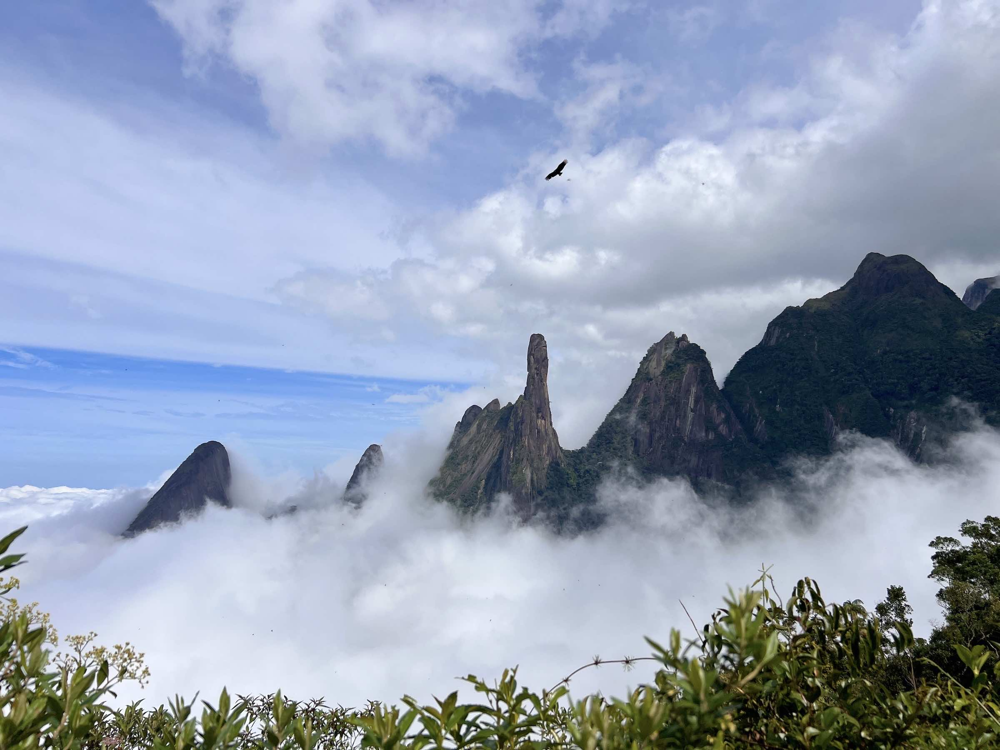
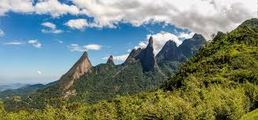
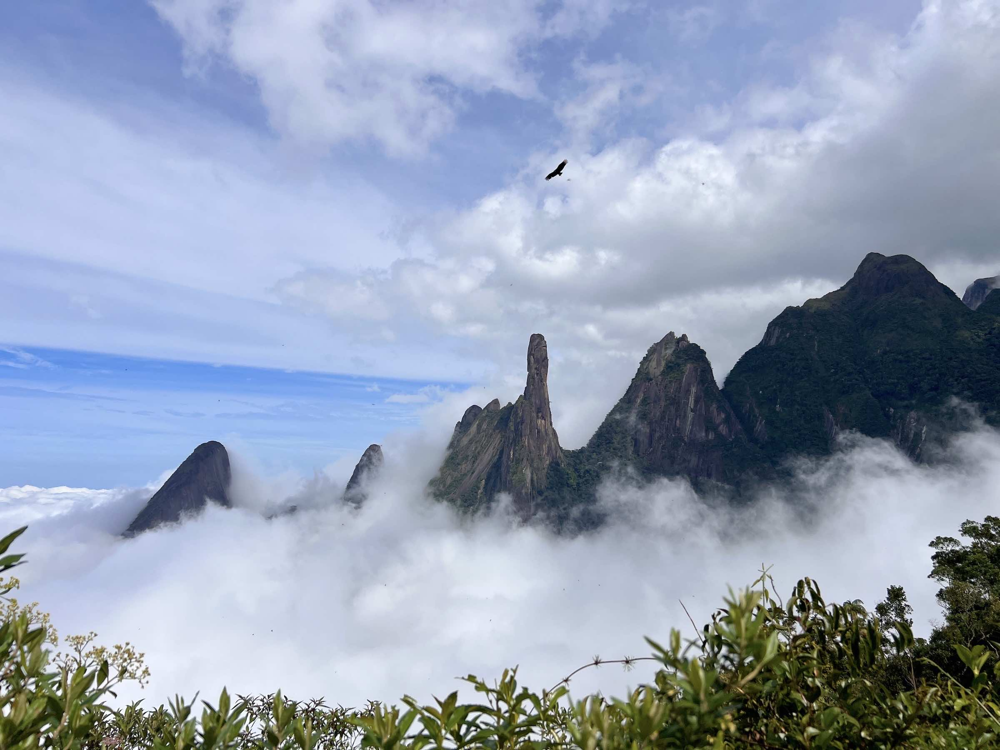
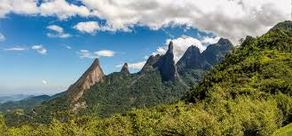

A Serra dos Órgãos, localizada no estado do Rio de Janeiro, é uma das regiões de maior relevância
ecológica do Brasil. Composta por cadeias montanhosas da Serra do Mar e abrangendo municípios como
Teresópolis, Petrópolis, Magé e Guapimirim, essa área abriga um dos últimos remanescentes significativos
de Mata Atlântica preservada no Sudeste. Sua diversidade de altitudes, microclimas e tipos de vegetação
cria condições únicas para o desenvolvimento de uma biodiversidade riquíssima e extremamente sensível.
Ecossistemas e Vegetação
A vegetação da Serra dos Órgãos varia conforme a altitude. Na parte baixa predominam as florestas
ombrófilas densas, exuberantes e úmidas, com árvores altas, bromélias, orquídeas e samambaias. Já em
altitudes acima de 1.800 m, ocorre a chamada vegetação de campos de altitude, com gramíneas, pequenos
arbustos, musgos e líquens, adaptados ao frio e aos ventos constantes.
Esse gradiente de vegetação permite a coexistência de diferentes ecossistemas, incluindo florestas
ripárias (margens de rios), encostas rochosas, nascentes e pântanos de montanha. A região é também berço
de vários rios importantes, como o Paquequer, Soberbo e Iconha, que abastecem cidades vizinhas e mantêm
a umidade da floresta.
Fauna
A Serra dos Órgãos é refúgio para uma enorme variedade de animais, alguns endêmicos e outros ameaçados
de extinção. Entre os mamíferos, destacam-se a jaguatirica, o gato-do-mato, a anta, o tamanduá-mirim e o
raro muriqui-do-sul (maior primata das Américas e gravemente ameaçado). Também habitam a serra o
bugio-ruivo e o macaco-prego, além de tatus, quatis, gambás e espécies de morcegos frugívoros e
insetívoros.
A avifauna da região é especialmente rica. Estima-se que o Parque Nacional da Serra dos Órgãos abrigue
mais de 450 espécies de aves, entre elas o gavião-pega-macaco, o galo-da-serra, tucanos, beija-flores,
corujas, sabiás, saíras, tiês e muitas outras. A variedade de altitudes contribui para a presença de
espécies tanto de baixada quanto de montanha.
A herpetofauna (répteis e anfíbios) também é notável. São dezenas de espécies de sapos e rãs, muitas das
quais endêmicas, além de serpentes como jararacas e cobras-cipó, lagartos como teiús e anolis, e cágados
nos corpos d'água. A presença de tantas espécies de anfíbios é um importante indicativo da pureza da
água e da boa conservação do ecossistema.
Flora
A flora da Serra dos Órgãos é uma das mais diversas da Mata Atlântica, com milhares de espécies
catalogadas. Destacam-se as bromélias e orquídeas, que crescem tanto sobre árvores (epífitas) quanto nas
rochas. Jequitibás, canelas, ipês, jacarandás e figueiras figuram entre as árvores centenárias da
região. Muitas dessas plantas têm importância medicinal, ornamental e até alimentícia.
A combinação de floresta densa e campos de altitude também favorece o surgimento de espécies raras, que
só ocorrem em altitudes elevadas, como certas micro-orquídeas e cactos rupestres.
Importância da Conservação
A Serra dos Órgãos está inserida no Corredor Ecológico da Serra do Mar, uma iniciativa para conectar
fragmentos de Mata Atlântica entre o Paraná e o Rio de Janeiro. A região é protegida por diversas
unidades de conservação, como:
- • Parque Nacional da Serra dos Órgãos (PARNASO)
- • Parque Estadual dos Três Picos
- • Parque Natural Municipal Montanhas de Teresópolis
- • APA Petrópolis
Essas áreas protegem a biodiversidade, nascentes, solos e clima local. Elas também são essenciais para
pesquisas científicas, ecoturismo sustentável e educação ambiental

 


